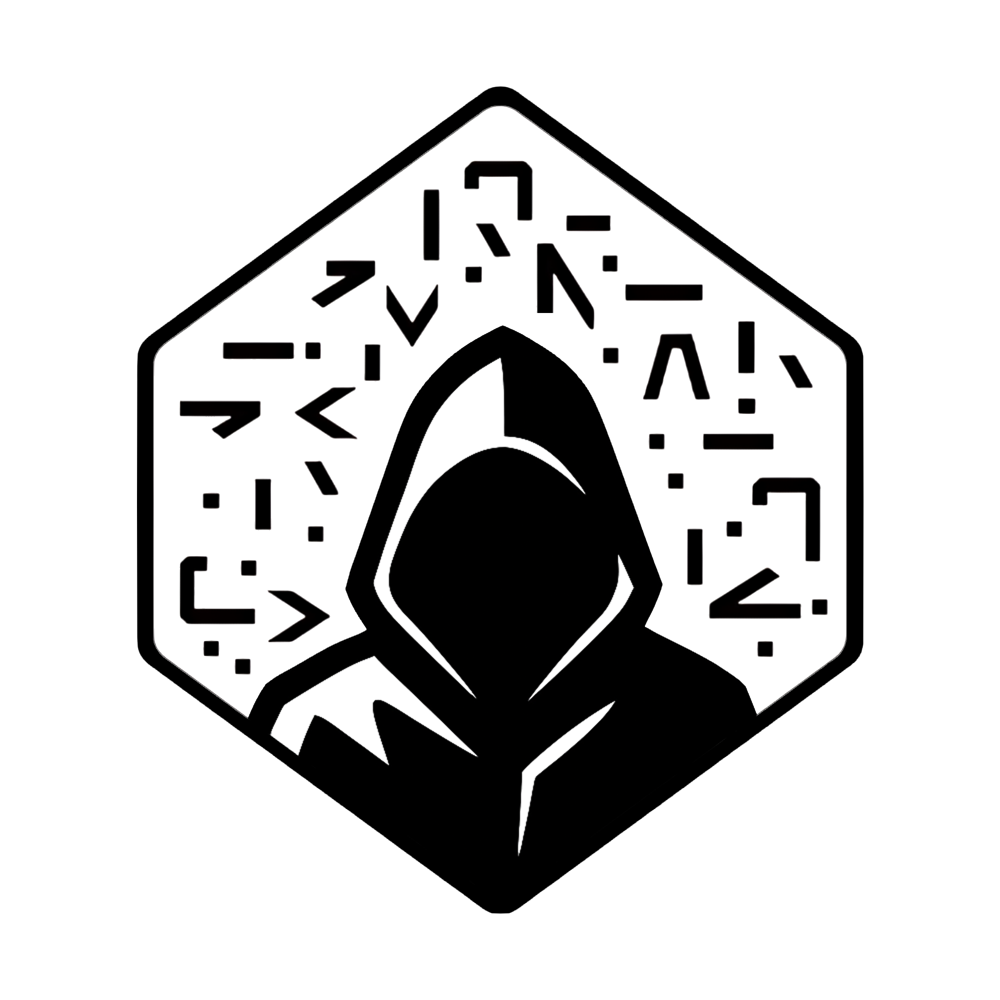
Numerai Council of Elders Hub
About this Hub
The Council of Elders is a community-elected group connecting the Numerai team with the wider ecosystem. This hub brings together everything the community creates and shares — from global meetups and open-source tools to educational resources and real-time collaboration. Explore the tabs ↑↑↑ to discover more and get involved.
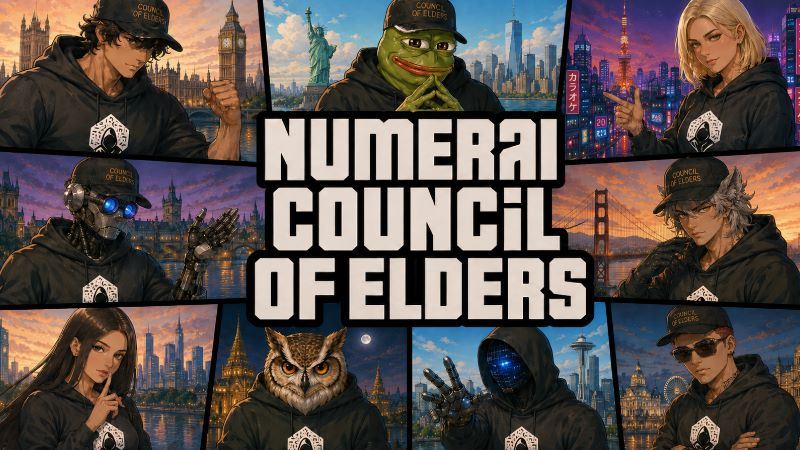
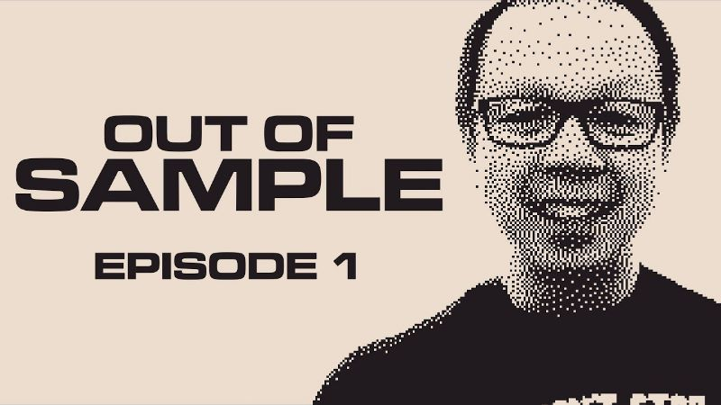
Out of Sample
Out of Sample is a community podcast and research show exploring the Numerai ecosystem from every angle. Hosted by Degerhan, each episode features deep conversations with the builders, researchers, and independent thinkers working at the frontier of autonomous AI agents, machine learning model design, and the decentralized tooling that powers it all.
Watch on YouTubeJoin the Discussion
Connect with fellow Numerai researchers, builders, and community members from around the world. Whether you are sharing strategies, asking questions, or exploring new ideas, this is the place to engage, collaborate, and learn together. Stay up to date with the latest developments and take part in real-time conversations shaping the ecosystem.
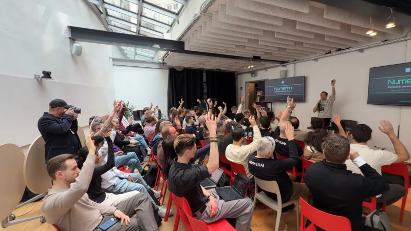
Decentralized AI Days
What started as local Numerai meetups has grown into a global movement. Our Decentralized AI Days are zero-hype events where the brightest minds connect. The momentum behind AI and Web3 is growing fast — join us to collaborate with top builders and help shape the future of user-owned AI.
Subscribe to Our Event Calendar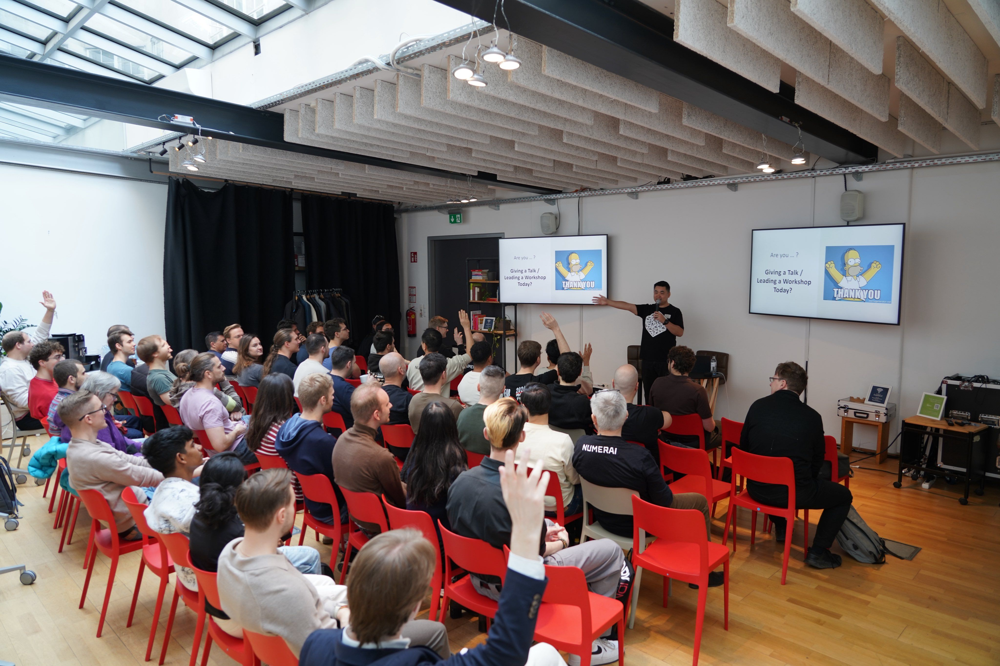


Built by Numeratis
From marketplaces and automation pipelines to live dashboards and leaderboards — tools created by Numerai community members to help you focus on strategy instead of setup.
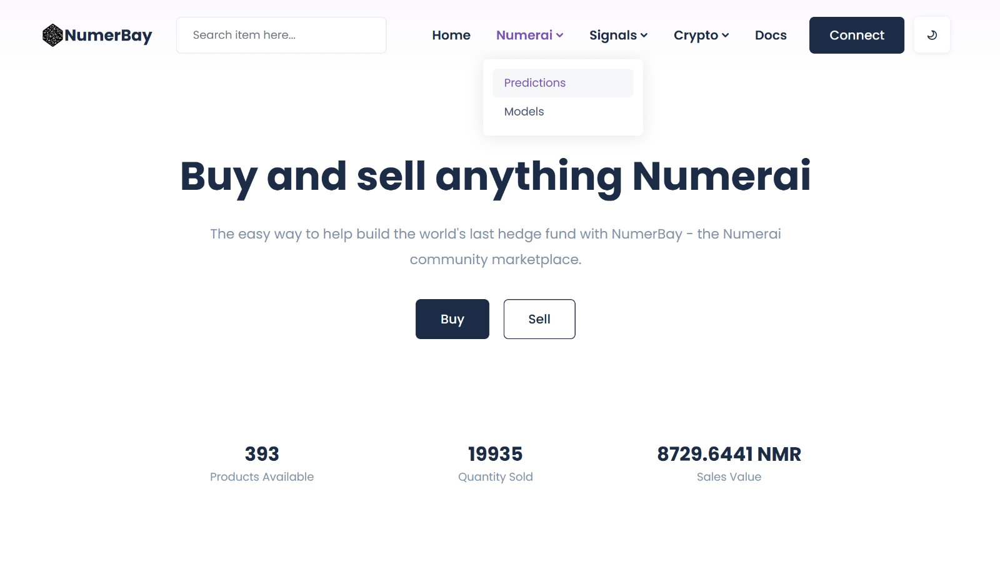
NumerBay
A community-built marketplace for buying and selling predictions, ML models, feature sets, and datasets for the Numerai tournament.
Visit NumerBay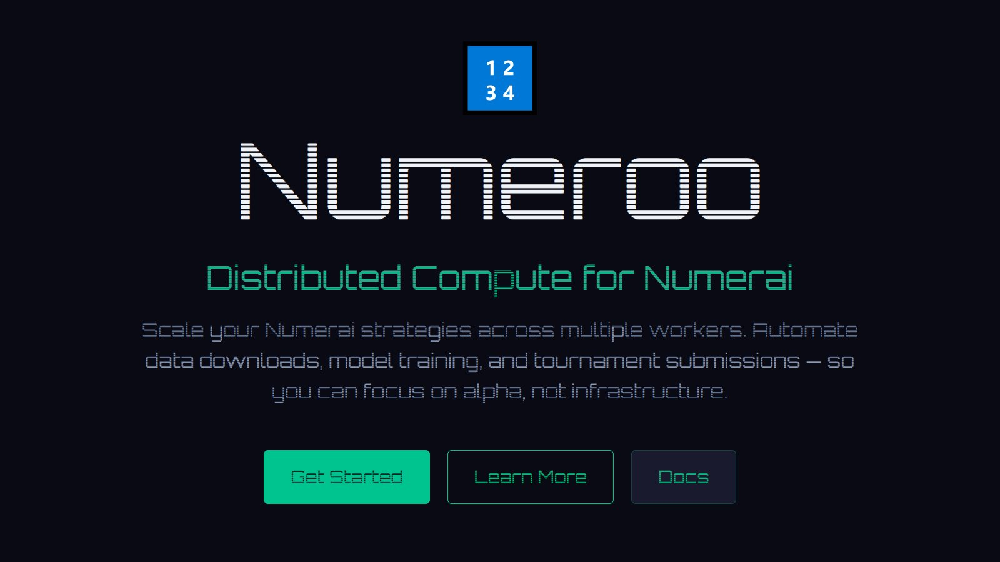
Numeroo
No-code automated model training, evaluation, and staking — connect your Numerai account and let Numeroo handle the full submission pipeline.
Try Numeroo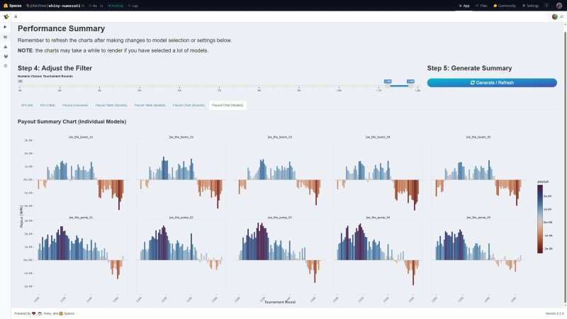
Shiny Numerati
Community-built dashboard for tracking Numerai Classic Tournament performance, leaderboard stats, and model-level analytics in real time.
View Dashboard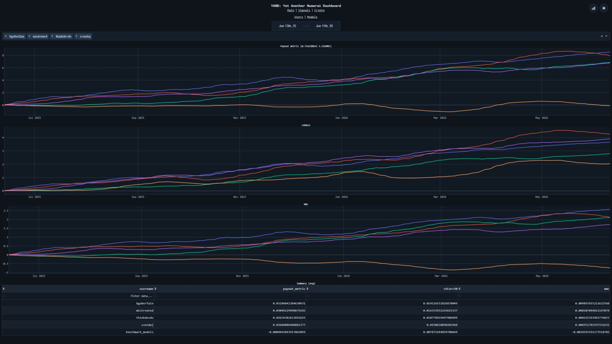
YAND
Account-level MMC charts, feature correlation views, and side-by-side model comparison — spot what is working and what is not across your Numerai portfolio.
View YAND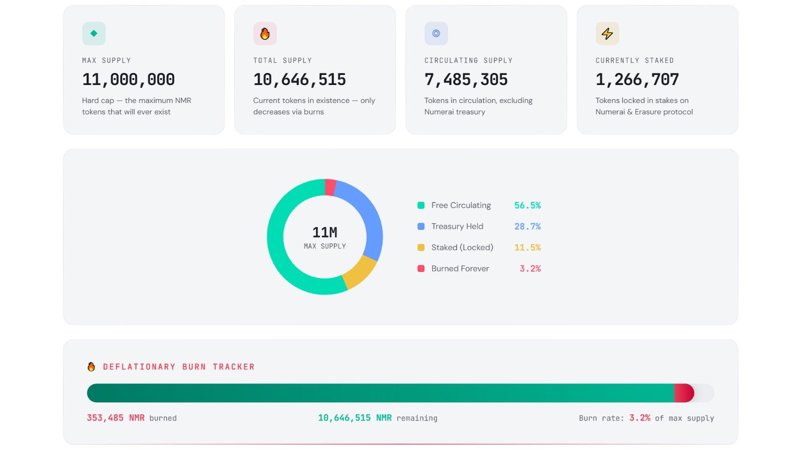
Tippening
Interactive Numeraire tokenomics dashboard — explore NMR supply, burns, buybacks, staking stats, and the deflationary mechanics behind the Numerai hedge fund.
Visit Tippening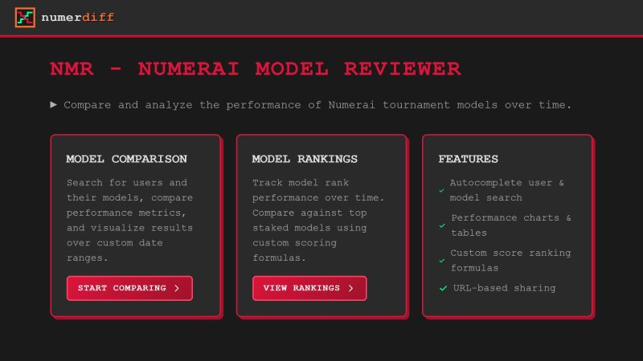
NumerDiff
Compare and rank Numerai models side by side — analyze performance metrics, evaluate model differences, and discover which strategies are working across the tournament.
Start Comparing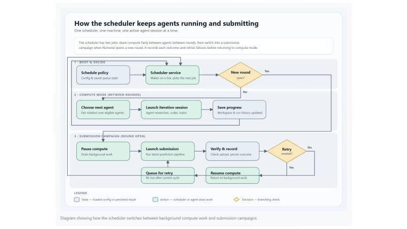
NumeraiAgentBench
Leaderboard tracking autonomous AI agents competing in the Numerai tournament — compare payouts, MMC scores, and submission rates across Claude Code, Codex CLI, and other agents.
View LeaderboardLearn and Explore
Curated learning resources created by Numerai community members — from meetup talks and workshop slides to technical blog posts, video tutorials, and Kaggle notebooks. Whether you are just getting started or sharpening advanced strategies, these materials help you learn Numerai, understand the ecosystem, and improve your models.

Meetup Materials
Open-source archive of talks, slides, and workshop materials from Decentralized AI Days events worldwide.
View on GitHub
Blog
News, technical deep-dives, and community stories from the Council of Elders and the broader Numerai ecosystem.
Read Blog
Kaggle Notebooks
Community notebooks for model development, exploration, and sharing Numerai strategies — browse, fork, and learn from fellow numerati.
Browse NotebooksCouncil of Elders
The Council of Elders is a community-elected body of Numerai participants who bridge the Numerai team and the broader community. We organize events like Decentralized AI Days, build and maintain community tools and dashboards, create educational content, and amplify the community's voice in shaping the ecosystem.
The CoE Treasury
The Numerai Council of Elders is supported by Numerai, which funds community initiatives such as events, open-source tools, and educational content. Treasury activity is managed through a Safe multi-signature wallet to ensure transparency and shared oversight. We also maintain an NMR/ETH liquidity pool on Uniswap, providing decentralized access to NMR for participants who prefer to use DEXs.
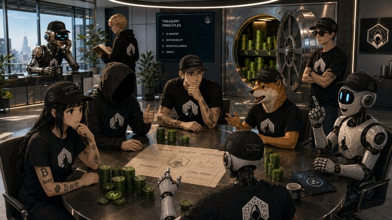